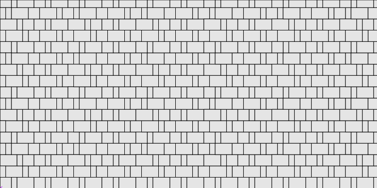
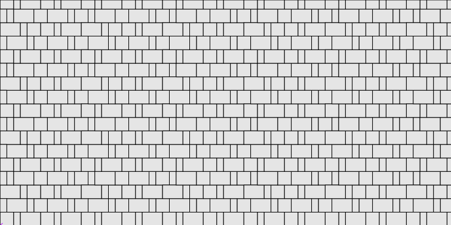

Проектировщик тротуарной плитки 2.2
Укладка плитки "Старый город"
Существует несколько разновидностей этого набора, с разным количеством форм и разными размерами форм.
Как правило, ширина плиток кратна ширине самой маленькой плитки. Для простоты и наглядности будем считать,
что комплект состоит из трёх плиток:
При составлении узора нужно добиться эффекта случайности чередования плиток. Очевидно, для этого нужно составить несколько рядов плиток и в каждом ряду - значительное количество плиток. Очевидно, в силу того, что все плитки изготовляются комплектом, то и использовать их нужно все. Поэтому в каждый ряд нужно уложить все плитки одного или нескольких комплектов. Вот так выглядит пример из 4-х рядов, в каждый из которых уложено по два комплекта плиток, по шесть штук в ряд:

Итак, случайность в пределах прямоугольника достигнута. Как будет выглядеть кладка? Как строго очерченные дорожки.

Это происходит из-за того, что боковые стороны построенного узора представляют собой прямые линии.
Что нужно сделать? Сместить ряды по горизонтали друг относительно друга. При этом все ряды должны остаться одинаковой длины. Смещать ряды от нулевой отметки нужно на расстояния, кратные ширине самой маленькой плитки. Вот так:

Теперь кладка выгладит хаотично:

P.S.
 |  | |
| 60x120 | 120x120 | 180x120 |
При составлении узора нужно добиться эффекта случайности чередования плиток. Очевидно, для этого нужно составить несколько рядов плиток и в каждом ряду - значительное количество плиток. Очевидно, в силу того, что все плитки изготовляются комплектом, то и использовать их нужно все. Поэтому в каждый ряд нужно уложить все плитки одного или нескольких комплектов. Вот так выглядит пример из 4-х рядов, в каждый из которых уложено по два комплекта плиток, по шесть штук в ряд:
Итак, случайность в пределах прямоугольника достигнута. Как будет выглядеть кладка? Как строго очерченные дорожки.
Это происходит из-за того, что боковые стороны построенного узора представляют собой прямые линии.
Что нужно сделать? Сместить ряды по горизонтали друг относительно друга. При этом все ряды должны остаться одинаковой длины. Смещать ряды от нулевой отметки нужно на расстояния, кратные ширине самой маленькой плитки. Вот так:
Теперь кладка выгладит хаотично:

P.S.
- Получить "правильный" узор из "неправильного" можно получить не только смещением рядов. Достаточно в каждом ряду перенести одну плитку (или несколько) из начала ряда в конец.
- При создании узора следует избегать ситуации когда в соседних рядах стыки плиток расположены строго друг над другом. Это несколько портит эффект хаотичности.